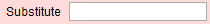
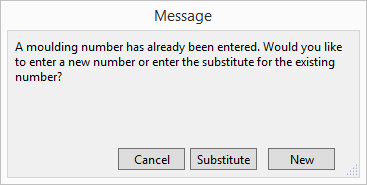

Substitute a Moulding for One Already Entered
This feature is for when two vendors sell the same moulding and you wish to order from one supplier instead of the other. Or, it can be used to switch a non-stock frame for a look-a-like frame you have available.
How to set up Your Substitute
-
Write down the moulding number you wish to use as a substitute.
-
In the Price Codes file, Find the moulding item you wish to assign a substitute.
-
Enter the substitute moulding number into the Substitute field (lower left corner).

Tip: This is also handy for when your staff enters a Larson number but you want to order from a local supplier, or vise versa.
How to Substitute One Moulding for Another
-
On the Work Order screen, enter the frame item number (which has a substitute) into the Frame1 field.
-
Click the magnifying glass button.
-
A dialog box appears asking if you want to enter a New moulding or use the Substitute.

-
Click Substitute to replace the moulding with the one identified in the Price Codes file.
If you click the Substitute button and an entry has not been made in the Substitute field of the Price Codes file, then a message appears telling you that no substitute can be found for this item.
If you click the New button, it returns you to the Search screen so that you can look for a different moulding.
© 2023 Adatasol, Inc.